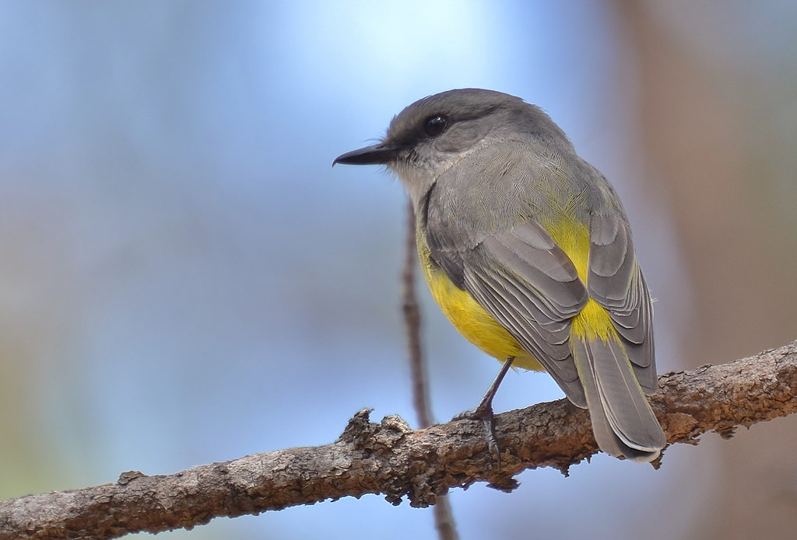

The western yellow robin (Eopsaltria griseogularis) is a species of bird in the Australasian robin family Petroicidae.
Described by John Gould in 1838, the western yellow robin and its Australian relatives are not closely related to either the European or American robins, but appear to be an early offshoot of the Passerida group of songbirds. Ranging between 13.5 and 15.5 cm (5 1⁄4 and 6 in) long, both sexes have grey upperparts and a grey breast and head, broken by whitish streaks near the bill and below the eye, with a conspicuous yellow belly. The species inhabits open eucalypt forest, woodland and scrub, generally favouring habitats with significant understory. Its range comprises the Southwest of Western Australia, the state's southern coastline, and the Eyre Peninsula in South Australia. Predominantly insectivorous, the western yellow robin pounces on prey from a low branch, or forages on the ground